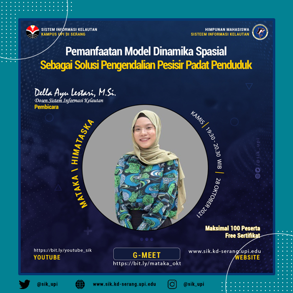
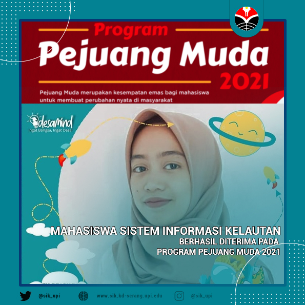
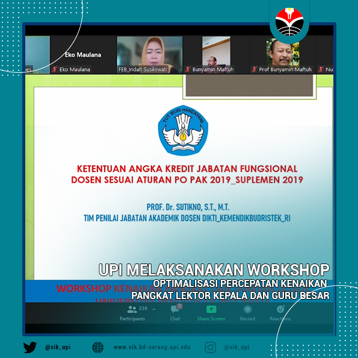

Akreditasi Sistem Informasi Kelautan UPI Serang








Universitas Pendidikan Indonesia Gelar Workshop Revitalisasi Pembelajaran Digital
JADWAL MATAKA OKTOBER
Mahasiswa Sistem Informasi Kelautan Berhasil Diterima Pada Program Pejuang Muda 2021
Mahasiswa Sistem Informasi Kelautan Berhasil Diterima Pada Research Fellowship Program (RFP)
Prodi Sistem Informasi Kelautan Menghadirkan Dosen Tamu di Mata Kuliah Oseanografi
UPI MELAKSANAKAN WORKSHOP OPTIMALISASI PERCEPATAN KENAIKAN PANGKAT LEKTOR KEPALA DAN GURU BESAR
MATAKA SEPTEMBER,AKTUALISASI DIRI MAHASISWA DALAM HUBUNGAN SOSIAL AKADEMIK
JADWAL MATAKA SEPTEMBER
Audit Mutu Internal Prodi Sistem Informasi Kelautan Kampus UPI di Serang
Universitas Pendidikan Indonesia Gelar Workshop Revitalisasi Pembelajaran Digital
Read MoreJADWAL MATAKA OKTOBER
JADWAL MATAKA OKTOBER
Read MoreMahasiswa Sistem Informasi Kelautan Berhasil Diterima Pada Program Pejuang Muda 2021
Mahasiswa Sistem Informasi Kelautan Berhasil Diterima Pada Program Pejuang Muda 2021
Read MoreMahasiswa Sistem Informasi Kelautan Berhasil Diterima Pada Research Fellowship Program (RFP)
Mahasiswa Sistem Informasi Kelautan Berhasil Diterima Pada Research Fellowship Program (RFP)
Read MoreProdi Sistem Informasi Kelautan Menghadirkan Dosen Tamu di Mata Kuliah Oseanografi
Prodi Sistem Informasi Kelautan Menghadirkan Dosen Tamu di Mata Kuliah Oseanografi
Read MoreUPI MELAKSANAKAN WORKSHOP OPTIMALISASI PERCEPATAN KENAIKAN PANGKAT LEKTOR KEPALA DAN GURU BESAR
UPI MELAKSANAKAN WORKSHOP OPTIMALISASI PERCEPATAN KENAIKAN PANGKAT LEKTOR KEPALA DAN GURU BESAR
Read MoreMATAKA SEPTEMBER,AKTUALISASI DIRI MAHASISWA DALAM HUBUNGAN SOSIAL AKADEMIK
MATAKA SEPTEMBER, AKTUALISASI DIRI MAHASISWA DALAM HUBUNGAN SOSIAL AKADEMIK
Read MoreJADWAL MATAKA SEPTEMBER
JADWAL MATAKA SEPTEMBER
Read MoreAudit Mutu Internal Prodi Sistem Informasi Kelautan Kampus UPI di Serang
Audit Mutu Internal Prodi Sistem Informasi Kelautan Kampus UPI di Serang
Read MoreRecent News